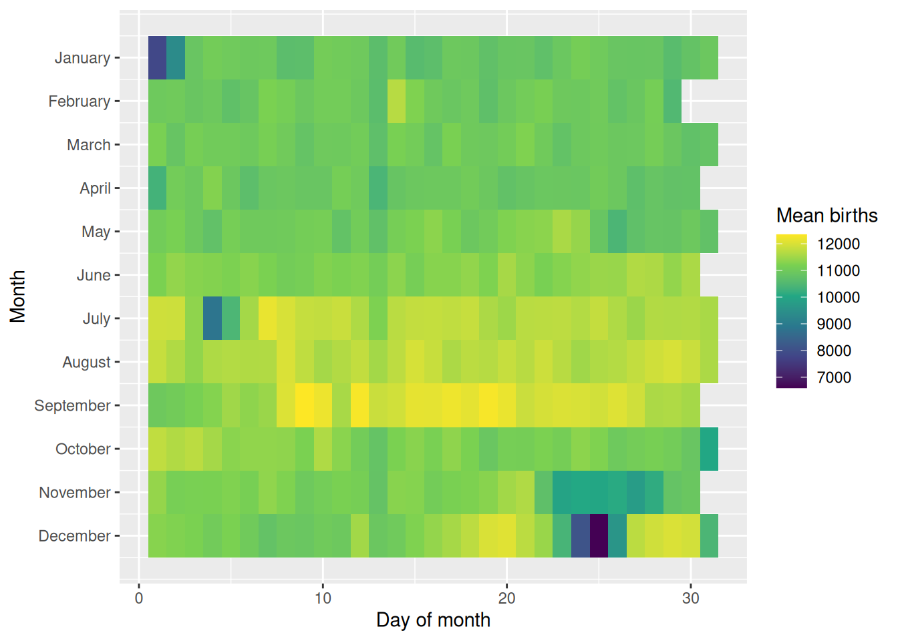
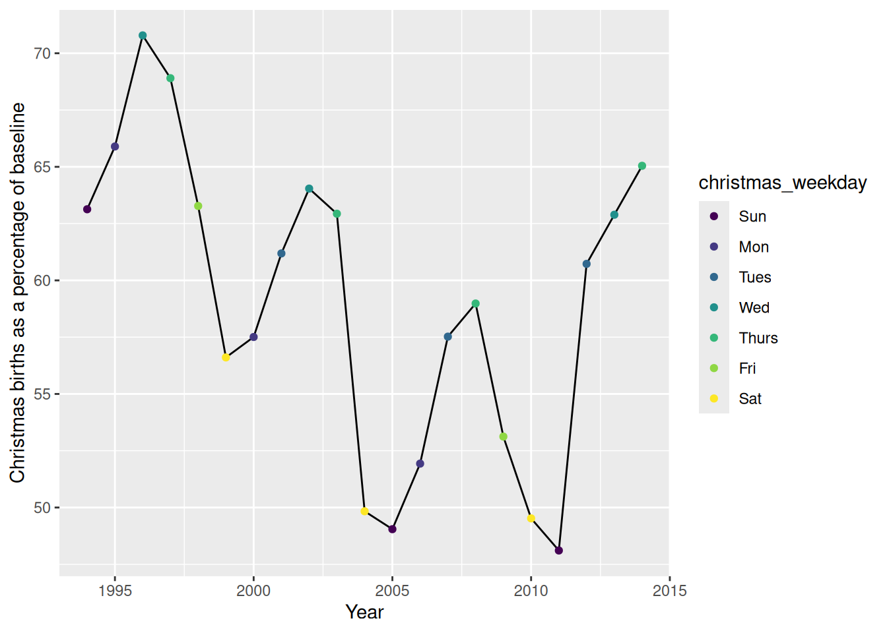
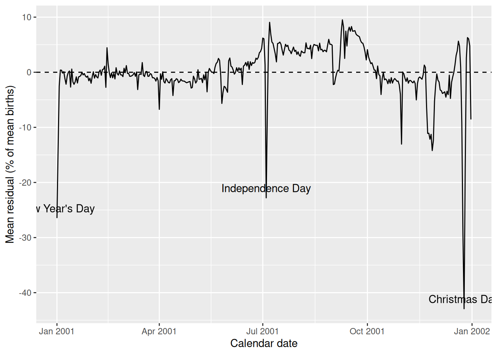
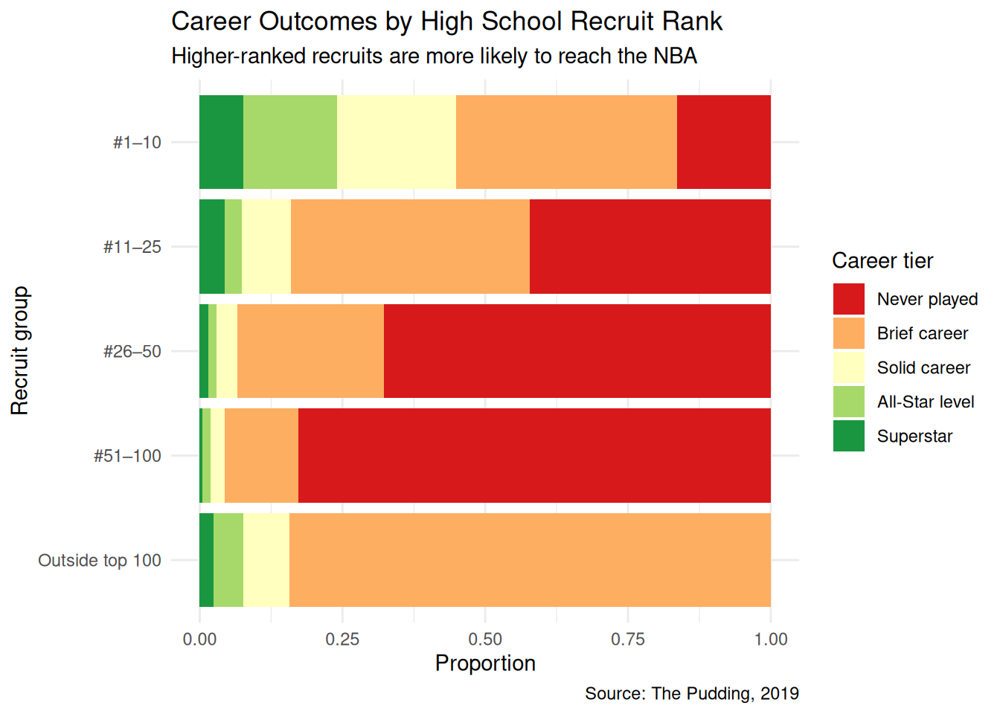
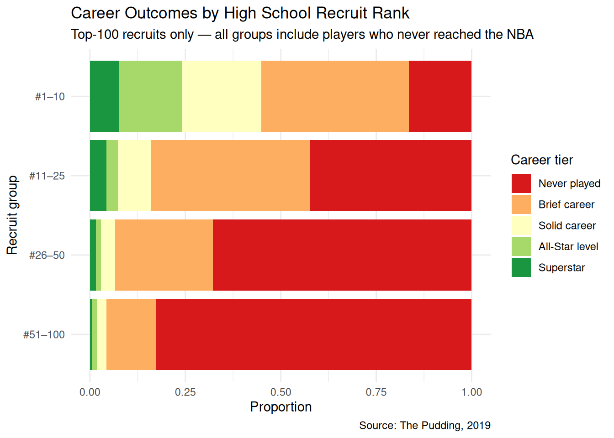
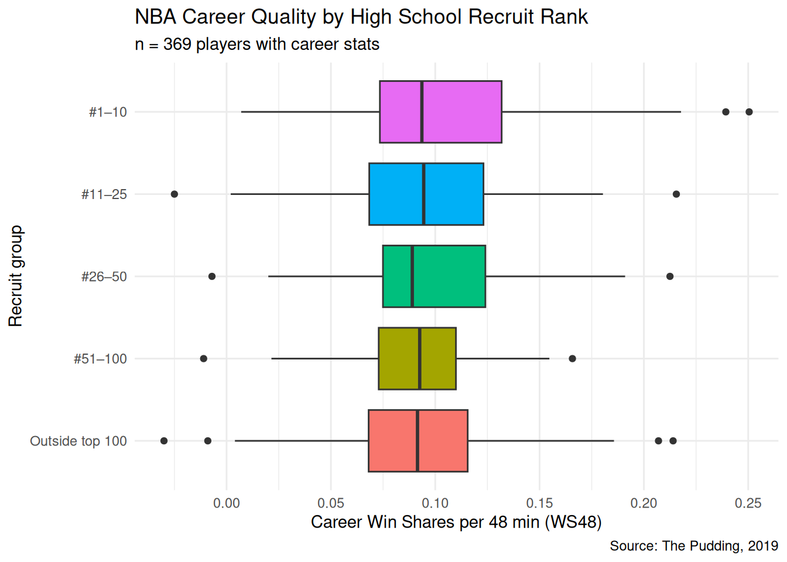
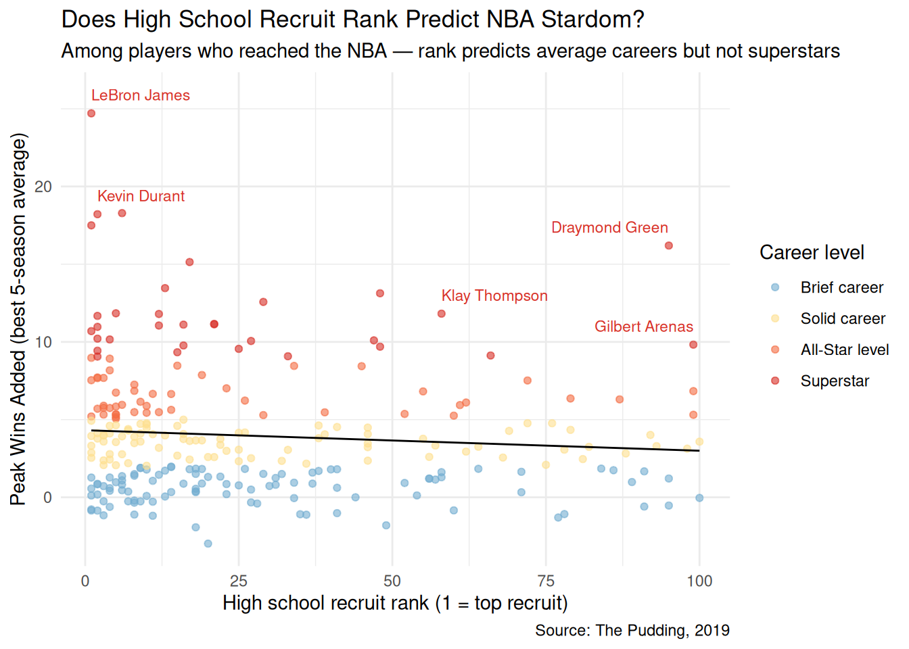

# A tibble: 10 × 3
column type example_values
<chr> <chr> <chr>
1 name character Al Harrington, Rashard Lewis, Korleone Young
2 rank numeric 1, 2, 3
3 recruit_year numeric 1998, 1998, 1998
4 college character NA, NA, NA
5 drafted logical TRUE, TRUE, TRUE
6 recruit_group character #1–10, #1–10, #1–10
7 nba_mean_ws48 numeric 0.0739090909090909, 0.13525, NA
8 top_mean_wa numeric 3.946, 11.672, NA
9 total_seasons numeric 16, 16, 1
10 tier character Solid career, Superstar, Brief career Analyzing US Births and Basketball Recruits
NBA recruits data structure
NBA recruits summary statistics
rank nba_mean_ws48 top_mean_wa total_seasons
Min. : 1.00 Min. :-0.03000 Min. :-2.980 Min. : 0.000
1st Qu.: 25.00 1st Qu.: 0.07000 1st Qu.: 0.970 1st Qu.: 1.000
Median : 50.00 Median : 0.09200 Median : 2.990 Median : 4.000
Mean : 50.19 Mean : 0.09622 Mean : 3.746 Mean : 5.071
3rd Qu.: 75.00 3rd Qu.: 0.12050 3rd Qu.: 5.364 3rd Qu.: 8.000
Max. :100.00 Max. : 0.25046 Max. :24.708 Max. :18.000
NAs :338 NAs :1504 NAs :1504 NAs :940
drafted
Mode :logical
FALSE:1255
TRUE :618
NBA recruits by career tier
# A tibble: 5 × 2
tier players
<ord> <int>
1 Never played 1014
2 Brief career 640
3 Solid career 113
4 All-Star level 66
5 Superstar 40Rows: 7,670
Columns: 5
$ year <dbl> 1994, 1994, 1994, 1994, 1994, 1994, 1994, 1994, 1994, 19…
$ month <dbl> 1, 1, 1, 1, 1, 1, 1, 1, 1, 1, 1, 1, 1, 1, 1, 1, 1, 1, 1,…
$ date_of_month <dbl> 1, 2, 3, 4, 5, 6, 7, 8, 9, 10, 11, 12, 13, 14, 15, 16, 1…
$ day_of_week <chr> "Sat", "Sun", "Mon", "Tues", "Wed", "Thurs", "Fri", "Sat…
$ births <dbl> 8096, 7772, 10142, 11248, 11053, 11406, 11251, 8653, 791… births year
Min. : 5728 Min. :1994
1st Qu.: 8786 1st Qu.:1999
Median :11981 Median :2004
Mean :11175 Mean :2004
3rd Qu.:12816 3rd Qu.:2009
Max. :16081 Max. :2014 
[1] 0.828832# A tibble: 21 × 5
year christmas_births christmas_weekday surrounding_average pct_of_baseline
<dbl> <dbl> <ord> <dbl> <dbl>
1 1994 7192 Sun 11392. 63.1
2 1995 7027 Mon 10664. 65.9
3 1996 7092 Wed 10019. 70.8
4 1997 7055 Thurs 10239. 68.9
5 1998 7020 Fri 11094. 63.3
6 1999 6674 Sat 11790. 56.6
7 2000 6719 Mon 11684. 57.5
8 2001 6603 Tues 10791. 61.2
9 2002 6774 Wed 10578. 64.0
10 2003 6744 Thurs 10716. 62.9
# ℹ 11 more rows year christmas_births christmas_weekday surrounding_average
Min. :1994 Min. :5728 Sun :3 Min. :10019
1st Qu.:1999 1st Qu.:6325 Mon :3 1st Qu.:10578
Median :2004 Median :6624 Tues :3 Median :11094
Mean :2004 Mean :6601 Wed :3 Mean :11252
3rd Qu.:2009 3rd Qu.:6774 Thurs:4 3rd Qu.:11790
Max. :2014 Max. :7192 Fri :2 Max. :12690
Sat :3
pct_of_baseline
Min. :48.11
1st Qu.:53.12
Median :60.73
Mean :59.10
3rd Qu.:63.28
Max. :70.79

tibble [7,670 × 6] (S3: tbl_df/tbl/data.frame)
$ year : num [1:7670] 1994 1994 1994 1994 1994 ...
$ month : num [1:7670] 1 1 1 1 1 1 1 1 1 1 ...
$ date_of_month: num [1:7670] 1 2 3 4 5 6 7 8 9 10 ...
$ day_of_week : Ord.factor w/ 7 levels "Sun"<"Mon"<"Tues"<..: 7 1 2 3 4 5 6 7 1 2 ...
$ births : num [1:7670] 8096 7772 10142 11248 11053 ...
$ pct_resid : Named num [1:7670] -0.638 5.292 -9.038 -10.192 -9.959 ...
..- attr(*, "names")= chr [1:7670] "1" "2" "3" "4" ...# A tibble: 365 × 4
month date_of_month mean_pct_resid calendar_date
<dbl> <dbl> <dbl> <date>
1 1 1 -26.5 2001-01-01
2 1 2 -13.9 2001-01-02
3 1 3 -2.52 2001-01-03
4 1 4 0.394 2001-01-04
5 1 5 0.363 2001-01-05
6 1 6 -0.149 2001-01-06
7 1 7 0.103 2001-01-07
8 1 8 -1.15 2001-01-08
9 1 9 -2.17 2001-01-09
10 1 10 -0.701 2001-01-10
# ℹ 355 more rows
# A tibble: 5 × 2
recruit_group n
<fct> <int>
1 #1–10 158
2 #11–25 232
3 #26–50 382
4 #51–100 763
5 Outside top 100 338


# A tibble: 10 × 4
name rank recruit_group nba_mean_ws48
<chr> <dbl> <fct> <dbl>
1 Chris Paul 6 #1–10 0.250
2 LeBron James 1 #1–10 0.239
3 Kevin Durant 2 #1–10 0.218
4 James Harden 17 #11–25 0.216
5 Stephen Curry NA Outside top 100 0.214
6 Kawhi Leonard 48 #26–50 0.212
7 Hassan Whiteside NA Outside top 100 0.207
8 Anthony Davis 1 #1–10 0.207
9 Dwight Powell 38 #26–50 0.191
10 Jimmy Butler NA Outside top 100 0.186`geom_smooth()` using formula = 'y ~ x'